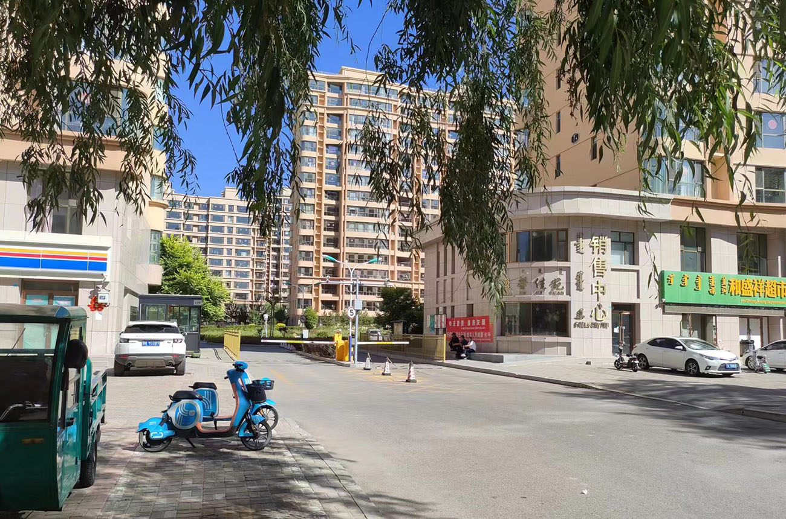

康巴什财富文苑小区：位于青春山街道，可提供客户接入端口共计524个。
康巴什文澜雅筑小区：位于青春山街道惠民街与萨拉乌苏路交汇处附近，可提供客户接入端口共计408个。
康巴什康雅居小区：位于乌力吉路与赛罕街交叉口东北50米，可提供客户接入端口共计324个。
康巴什神华康城F区小区：位于乐康街，可提供客户接入端口共计512个。

康巴什盈馨佳苑二期小区：位于青春山街道赛罕街与波日特路交汇处，可提供客户接入端口共计552个。
康巴什神华康城C区小区：位于泰康街，可提供客户接入端口共计608个。
康巴什水岸华府新区小区：位于多日纳路，可提供客户接入端口共计208个。